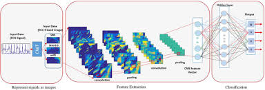
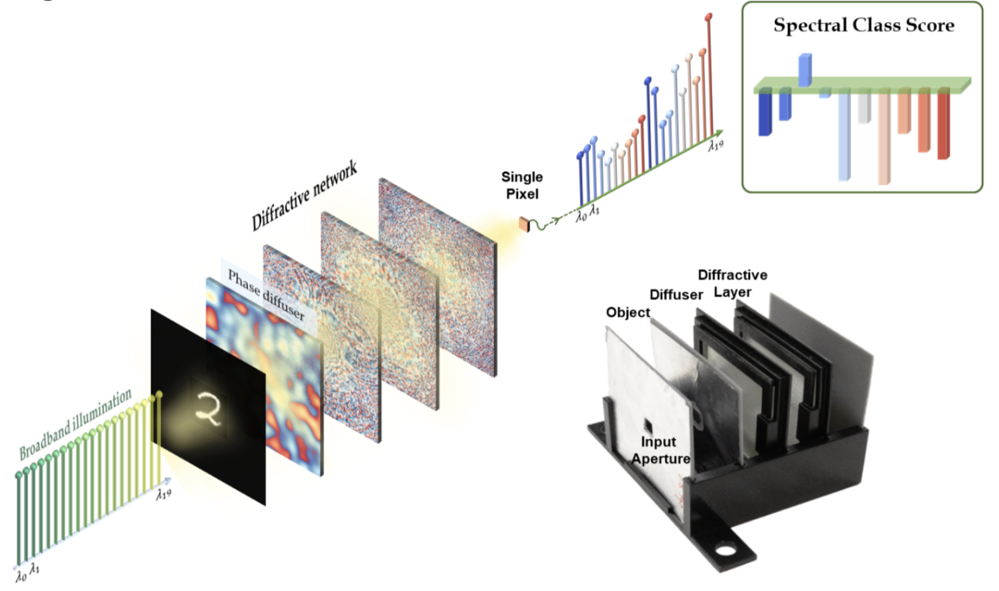
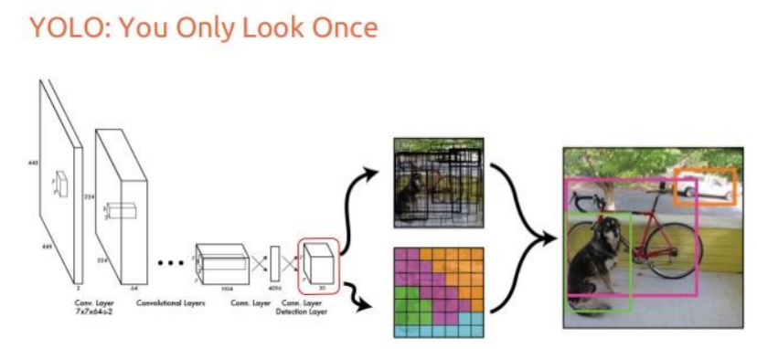

AI Projects by Htet
AI for Lung X-ray Analysis
This project involves training an AI model to detect COVID-19, Pneumonia, TB, and Normal conditions from lung X-ray images. The model uses advanced convolutional neural networks (CNN) and has been trained on a diverse dataset to ensure high accuracy.
 Interact with model here
Interact with model here
ECG Signal Classification with AI
Investigating various AI models to detect ECG signals and classify 5 classes using the large ECG PTB XL dataset. LSTM with an extra layer model architecture is the best, achieving 90% f1 accuracy on normal data and 60% to 80% on the other 4 abnormal classes.
 Click here to explore moreTic Tac Toe game AI
Experiments on AI models such as CNN, LSTM, and CNN-LSTM hybrid models in Tic Tac Toe games to see which performs better by playing TTT with AI vs AI or AI vs humans. Interestingly, the LSTM-CNN hybrid model performs the least effectively.
Git Link Video HereHandwritten Digit Classifier
Using Image CNN with edge and image noise detection as features to recognize handwritten digits using the MNIST dataset. Note: To interact with the model, write the digit distinctively and clearly.
 Git Link Interact with ModelYOLO Object detection Transfer Learning Showcase
Transfer learning with YOLO CNN base powerful object detection for Advanced Image CNN. As YOLO is trained on thousands of images to classify multiple objects, the ideal to deploy as robotic vision, defense drones, industrical and more.
 Showcase